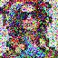
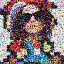
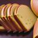
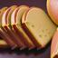
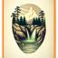
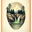

The goal of this project is to simply play around with diffusion models.
Here are 3 provided text prompts and the output of the model.
The model is able to capture the semantics of the given prompt, and the quality of the image increases as the number of steps increases.
When the number of steps is 5, there exist visible noises in the image reflecting that the denoising steps are insufficient.
Moving on to steps of 20, the noise is almost gone; with 100 steps, the image has detailed textures.
I have used the seed of 42 from here and throughout the project part A.
Number of steps: 5
Number of steps: 20
Number of steps: 100
Here are the images of the original Campanile and at the forward path of noise level 250, 500, and 750.

Here are the images of the noised images and denoised ones using Gaussian filter with kernel size = 5 and default (1.1) sigma.
Classical denoising is not a good solution, particularly at a high noise level.

With a pretrained UNet, I estimate the noise by passing through stage_1.unet and remove the estimated noise from the noisy image.
Here are the images of the noised images and one-step denoised ones at noise level 250, 500, and 750.
The results are much better than the classical denoising, albeit losing a lot of high frequency components.
With the same pretrained UNet, I iteratively denoise the image by passing through stage_1.unet multiple times.
To reduce the computation, used strided timesteps where the stride is 30.
Iterative denoising works by first estimating the clean image with current noisy image, then estimating the immediate previous timestep.
Also, the previous (classical, one-step) denoising approaches are presented. It is clear that the iterative denoising results in the best quality.
Iterative denoising (stride=30) at timestep 690, 540, 390, 240, 90, final.
Original image (not downsampled), Gaussian blurred, One-step denoised
Here are five sampled images by passing a random noise and using the prompt "a high quality photo". Still using the strided timesteps.
Here are five sampled images with guidance, using the conditioning prompt "a high quality photo" and a null prompt, with gudiance scale of 7.0.
The guidance is effective in generating high quality images with vivid colors and more realistic details.
This is really interesting and maybe implying an algebraic structure in the noise space, happy to look into this line of research...

Here are the images of the image-to-image translation with CFG (the previous section) for Campanile and two own test images.
This is SDEdit: first the noise is added to the image, then the model is guided to generate a new image resulting in a different image.
Each row corresponds to each image and columns correspond to the result at i_start = 1, 3, 5, 7, 10, 20, and original.
It is interesting to see model being creative at intermediate noise levels, but also generating a completely different image at high noise levels.


Here are the images of the image-to-image translation with CFG for 1 image from the web (Mario), and 2 hand-drawn images (Trees, Room).
In the intermediate noise level (i_start = 7,10 especially) the model is able to get a quite natural image.

Here are the images of the inpainting with test image and two images of my choice.
Inpainting is performed by forcing the unmasked region of the image to be the same as the original image during denoising.
Input image, mask, hole to fill
Denoising steps at the timestep of 990, 840, 690, 540, 390, 240, 90, 30.


Input image, mask, hole to fill

Denoising steps at the timestep of 990, 840, 690, 540, 390, 240, 90, 30.
Input image, mask, hole to fill: for this unrealistic image, the inpainting didn't work well..
Denoising steps at the timestep of 990, 840, 690, 540, 390, 240, 90, 30.
 Here are the images of the text-conditional image-to-image translation with CFG for 3 images and various noise levels.
The noise level used here is i_start = 1, 3, 5, 7, 10, 20.
At high noise level, information about the original image is almost lost and the model generates image guided mostly by the text prompt.
An intermediate noise level is where interesting things are happening: the model is able to interpolate between the text prompt and the original image.
For example with my case, a dog that looks kind of like a bread, and a bicycle made of pencils.
Input image: Campanile, Conditioning prompt: "a rocket ship"

Input image: Bread, Conditioning prompt: "a photo of a dog"
 

Input image: Bicycle, Conditioning prompt: "a pencil"

Here are three examples of visual anagrams with corresponding text 1 (unflipped) and text 2 (flipped) and intermediate generations:
Text 1: "an oil painting of people around a campfire", Text 2: "an oil painting of an old man"
Text 1: "a photo of a dog", Text 2: "a man wearing a hat"

Text 1: "a photo of a hipster barista", Text 2: "a photo of the amalfi cost"


Finally, these are sampling results for hybrid images with intermediate generations and text 1 (low frequency), text 2 (high frequency).
The result is inspired from Daniel Geng's recent work on factorized diffusion.
Text 1: "a lithograph of a skull", Text 2: "a lithograph of waterfalls"
 

Text 1: "a photo of a pyramid", Text 2: "a photo of flower arrangements"
Text 1: "a photo of a yin yang symbol", Text 2: "a photo of Rome". Nice to see the Rome Colosseum inside the yin yang.
The goal of this project is to implement a diffusion model (DDPM, Denoising Diffusion Probabilistic Models) with UNet on the MNIST dataset.
With sigma = 0.0, 0.2, 0.4, 0.5, 0.6, 0.8, 1.0, we can observe an increasing level of noise.
The original images are randomly taken from the evaluation split of MNIST dataset.
All hyperparameters (optimizer, batch size, epochs, LR, etc.) are identical to the provided setting.
I have overlayed the per-epoch evaluation loss on top of the per-step train loss curve. The model doesn't overfit until the epoch 5.
After the first epoch (the first row), the model is not trained well and the results are not good.
After the fifth epoch (the second row), the reconstucted images are quite close to the original images.
I have observed that the quality gets gradually better as we progress on epochs.

The UNet was trained on the noise level of sigma = 0.5. With various noise levels, I sampled the following result:
Quality of the denoised image is satisfactory when the noise level is less than or equal to the training noise level.
The model fails to denoise the image when the noise level is higher than the training noise level. (e.g. sigma = 1.0)
For the time-conditioned UNet, I have used the same hyperparameters as the provided setting.
Initially I have used same t (drawn from a uniform distribution between 0 and T) for a batch but soon noticed that it results in no training.
As we have T of 300 and a batch size of about 400, it is important to use different t for each sample for the model to learn.
In the loss curve, we have twice the number of steps compared to the previous part since we have decreased the batch size by half.
Here I present a 40 sampled results after Epoch 1, 5, 10, 15, 20.
As the seed is initialized just before the sampling, the initial normal distribution is the same for all instances.
Hence the results clearly show that the model is progressively generating more realistic digit images.
Epoch 1
Epoch 5
Epoch 10
Epoch 15

Epoch 20
Also for the class-conditioned UNet, I have used the same hyperparameters as the provided setting, including guidance factor of 5.0.
As we have 10 classes, I have used the one-hot encoding for the class label.
10% of the samples have class embeddings dropped out to learn unconditional generation.
The loss curve does not show overfitting at least until the epoch 20.
Here I present a 40 sampled results, 4 for each of the 10 digits, after Epoch 1, 5, 10, 15, 20.
Compared to the time-conditioned case where I have seen consistent improvement after epochs,
the performance of the class-conditioned model is already good enough after the 10th epoch.
It is interesting to see that the model is able to generate very realistic digit images with the class information, with just a few epochs of training.
Epoch 1
Epoch 5
Epoch 10
Epoch 15
Epoch 20
This is the end of class projects. Thank you for preparing this interesting project materials!